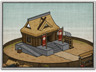

Enables
- Buildings: 
Spawned Garrisons
- Units:

Basic Building Statistics (can be modified by difficulty level, arts, skills, traits and retainers)
- Cost: 600
- Unlocks an additional construction slot
- Consumes food: 1
Description
High walls and closed doors conceal many treasures.
A town allows an extra specialist building to be constructed. New buildings increase the value of a province through, for example, trade, or allow a greater selection of troops to be recruited. There was a certain ambiguity in the attitude of Japanese society to the idea of towns. It was nice to have somewhere with a veneer of civilized living, but there were the people who lived in towns as well. Chonin, or townsmen, were a class that included merchants and many craftsmen not directly tied to agricultural production. While there was a certain back-breaking respectability to being a member of the peasantry, the chonin had a slightly lower status. However they earned their livings, it certainly wasn't by honest graft in the fields. Wise rulers, however, recognised that towns were vitally important to their provinces, and could be a source of considerable pride as they grew and, hopefully, flourished. It was only in a good size town that certain skilled craftsmen, goldsmiths, say, would ever find enough customers to be able to survive.